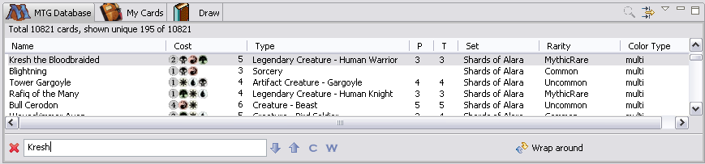

You can search for a card with specific name using Search box.
You can also achieve same results using filter, but this way is more convenient when
you create a deck from the a "real life" deck.
To open it select "view menu->Find..." or "Ctrl+F".
To close it click on "X" button.
To find a card, enter a part of the card name (it only searches the card name, not full text),
search starts as soon as you start typing.

If card name contains non-english letter, type the part of the word that has only English letters.
If card name consists of several words, you can type only first letters of each word starting with capital letter (called Camel Case search),
for example to find "Shield of the Righteous" type "SOTR" in the search field. If it is not your card you can keep typing
(for example "ShOTRig") until full name is typed or press Enter to cycle through search results.
You can search forward by pressing "arrow down" button.
You can also search backward by pressing "arrow up" button.
Pressing "Enter" would search again in the same search direction.
To use case sensitive search press "C" button (In this case Camel Case search won't work).
To use search where only whole word would match press "W" button.
When you reach the end it will wrap around, you will see "Wrap around" icon on the right.
If it cannot find match field would become red.